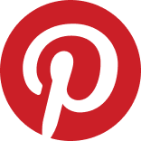

STORY OF THIS PROJECT

Sebuah karya desain yang memikat sering kali lahir ketika tugas akademis bertemu dengan passion pribadi yang mendalam. Momen itu hadir di semester dua, saat dosen mata kuliah Workshop Desain Kreatif memberikan tantangan untuk menciptakan sebuah media cetak yang wajib menerapkan elemen dan konsep desain yang telah ditentukan. Sebagai seorang pencinta dunia otomotif, khususnya deru mesin jet darat Formula 1, pencarian inspirasi pun dimulai dengan menjelajahi jagat Pinterest. Di sanalah mata terpaku pada sebuah desain poster ikonik Porsche, yang tata letak serta komposisinya langsung memantik ide segar untuk diadaptasi dan dikembangkan lebih jauh.
Dengan memanfaatkan struktur layout tersebut, elemen-elemen visual mulai disusun dengan matang. Pilihan jatuh pada sosok pembalap F1 berkebangsaan Monako dari tim Scuderia Ferrari yang identik dengan nomor balap 16: Charles Leclerc. Menjadi bagian dari tim kuda jingkrak sejak tahun 2019, Leclerc bukan hanya sekadar subjek foto, melainkan jangkar visual yang sempurna untuk poster ini.
Komposisi dirancang untuk menampilkan berbagai sudut pandang dinamis dari sang pembalap; mulai dari potret wajahnya yang penuh fokus, detail grafis pada helm pelindungnya, hingga siluet sangar mobil balap Ferrari yang membelah lintasan. Tidak hanya bermain di ranah estetika visual, poster ini juga diberi "nyawa" dan kedalaman cerita dengan menyematkan sebuah pertanyaan spekulatif yang selalu mendebarkan bagi para penggemar balap: seberapa besar peluang Ferrari untuk kembali merebut gelar juara dunia?
Melalui proyek ini, lembar tugas kuliah berhasil diubah menjadi sebuah media cetak yang bertenaga. Karya ini menjadi pembuktian bahwa penerapan teori desain yang kaku sekalipun bisa terasa sangat hidup dan emosional ketika dipadukan dengan minat yang mendalam terhadap dunia motorsport.
TOOLS USED FOR THIS PROJECT

PINTERESTMari kita bangun sesuatu yang luar biasa bersama
Terbuka untuk kesempatan magang, project freelance atau kolaborasi riset.